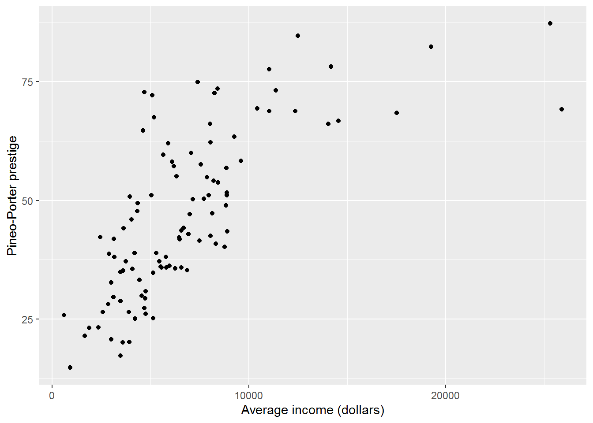

Chapter 5 Linear regression
By the end of this chapter you will:
- Know how fit and compare regression models using R (three commands:
lm,summary,anova). - Understand how to interpret the output from these commands.
- Have explored some more examples of tidyverse analyses.
Next chapter, we will explore how to check model assumptions, which may or may not hold for the models we fit here.
5.1 Before we begin
Download the prestige dataset, create an R Markdown file, and ensure they are both saved in a folder you will find again. I recommend writing down any questions you have as you go, perhaps in your Markdown file, so that you can discuss them with whoever else you have roped into learning R.
5.2 The dataset
We will use a dataset on occupational prestige from Canada, 1971, which is used by Fox and Weisberg (2019). Each row in the dataset describes an occupation, and aggregated data about that occupation.
| Variable name | Description |
|---|---|
| occ | Occupation |
| education | Average years of education for people in job |
| income | Average income in dollars |
| women | Percentage of women in occupation |
| prestige | A Pineo-Porter prestige score for the occupation with a possible range of 0-100 (higher = more prestigious) |
| type | “bc” = blue collar “wc” = white collar “prof” = professional, managerial, or technical |
I’m going to read it in as dat but feel free to choose any name you desire.
dat <- read.csv("prestige.csv")Here are the top 5 rows:
head(dat, 5)## occ education income women prestige type
## 1 gov administrators 13.11 12351 11.16 68.8 prof
## 2 general managers 12.26 25879 4.02 69.1 prof
## 3 accountants 12.77 9271 15.70 63.4 prof
## 4 purchasing officers 11.42 8865 9.11 56.8 prof
## 5 chemists 14.62 8403 11.68 73.5 profSpend some time checking that you understand each row.
Our challenge for this tutorial is to work out what predicts the prestige of occupations.
5.3 Interlude on methodology
The objective of this tutorial is simply to understand linear regression; however, I think it’s worth commenting briefly on methodology.
It is important to develop research questions and (if possible, directional) statistical hypotheses before obtaining data, based on prior evidence and theory.
These days, analysis plans are often published before any data are obtained. This is to avoid “data dredging” (also known as “p-hacking”) which makes it likely to find results by “capitalising on chance” that have no hope of replicating or generalising beyond the sample. Looking at graphs of data counts as data dredging; you can’t create hypotheses from hindsight. See this page from the Center for Open Science for more info.
5.4 Descriptives
I’ll include tidyverse for ggplot, pipes, etc., as they will come in handy later:
library(tidyverse)The base R summary command is a quick way to obtain a summary of all variables; give it the data frame you wish to summarise as follows:
summary(dat)## occ education income women
## Length:102 Min. : 6.380 Min. : 611 Min. : 0.000
## Class :character 1st Qu.: 8.445 1st Qu.: 4106 1st Qu.: 3.592
## Mode :character Median :10.540 Median : 5930 Median :13.600
## Mean :10.738 Mean : 6798 Mean :28.979
## 3rd Qu.:12.648 3rd Qu.: 8187 3rd Qu.:52.203
## Max. :15.970 Max. :25879 Max. :97.510
## prestige type
## Min. :14.80 Length:102
## 1st Qu.:35.23 Class :character
## Median :43.60 Mode :character
## Mean :46.83
## 3rd Qu.:59.27
## Max. :87.20There are a variety of ways to create what is often known as “Table 1,” so called because it is usually the first table in quantitative journal articles.
Here is one, in the tableone package:
library(tableone)
dat %>%
select(-occ) %>%
CreateTableOne(data = .)##
## Overall
## n 102
## education (mean (SD)) 10.74 (2.73)
## income (mean (SD)) 6797.90 (4245.92)
## women (mean (SD)) 28.98 (31.72)
## prestige (mean (SD)) 46.83 (17.20)
## type (%)
## bc 44 (44.9)
## prof 31 (31.6)
## wc 23 (23.5)The select line says to remove the occ (occupation) variable (can you see why I did that?). The data = . option is there because CreateTableOne doesn’t understand %>% plumbing. The . represents the output from the previous line so connects the information flow correctly.
You will also usually want to create scatterplots of relationships between continuous variables, similar to what we did with the Gapminder dataset. Which leads onto the following activity.
5.4.1 Activity
Create the following scatterplots:
- prestige against education
- prestige against income
Describe the relationship you see.
5.4.2 Answer
a. prestige against education
dat %>%
ggplot(aes(x = education, y = prestige)) +
geom_point() +
labs(x = "Average years of education",
y = "Pineo-Porter prestige")There appears to be a linear association between education and prestige; more education is associated with higher prestige.
b. prestige against income
dat %>%
ggplot(aes(x = income, y = prestige)) +
geom_point() +
labs(x = "Average income (dollars)",
y = "Pineo-Porter prestige")
Up to around $10000, there seems to be a linear correlation between income and prestige, after which the relationship flattens out, i.e., more income does not lead to higher prestige. (At least, that’s what I see!)
5.5 Prep to understand the simplest regression model
5.5.1 Activity
The simplest regression model we will explore in a moment just models the mean of the outcome variable. So that we can see how it works, first calculate the mean and SD of prestige.
5.5.2 Answer
mean(dat$prestige)## [1] 46.83333sd(dat$prestige)## [1] 17.204495.6 The simplest regression model: intercept-only model
The command for fitting a regression model is called lm, which is short for linear model. It wants a formula, describing the model to be fitted, and the name of a data frame containing your data.
Here is how to fit the intercept-only model:
mod0 <- lm(formula = prestige ~ 1, data = dat)The left-hand side of ~ (tilde) is the outcome or response variable we want to explain/predict. The right-hand side lists predictors. Here 1 denotes the intercept.
Since the first two parameters of lm are formula and data (check ?lm), this can be abbreviated to:
mod0 <- lm(prestige ~ 1, dat)As ever, since we have saved the result in a variable, nothing has visibly happened. You could have a peek at the result with:
mod0##
## Call:
## lm(formula = prestige ~ 1, data = dat)
##
## Coefficients:
## (Intercept)
## 46.83There is a LOT more info in the object which you can see with this structure command, str:
str(mod0)If you run this you will see why we usually prefer to use summary on the output; this pulls out useful info and presents it in a straightforward way:
summary(mod0)##
## Call:
## lm(formula = prestige ~ 1, data = dat)
##
## Residuals:
## Min 1Q Median 3Q Max
## -32.033 -11.608 -3.233 12.442 40.367
##
## Coefficients:
## Estimate Std. Error t value Pr(>|t|)
## (Intercept) 46.833 1.703 27.49 <2e-16 ***
## ---
## Signif. codes: 0 '***' 0.001 '**' 0.01 '*' 0.05 '.' 0.1 ' ' 1
##
## Residual standard error: 17.2 on 101 degrees of freedomThe estimate for the intercept is 46.833, the same as the mean of prestige we calculated above.
There is other information:
- The standard error (SE), which provides information on the precision of the estimate: the smaller the SE, the more precise the estimate of the population mean.
- The t-value, which is equal to the estimate divided by the SE. This is used to test whether the estimate is different to zero, which isn’t particularly informative for the intercept; it’s more so when we get to slopes in a moment.
- The p-value is calculated from the distribution of t under the assumption that the population estimate is 0 and helps us interpret the t. R presents it here as “<2e-16.” This says that p is less than 0.0000000000000002, or \(2 \times 10^{-16}\). So, for what it’s worth, and using the usual not-entirely-correct applied stats vernacular: the intercept, here mean prestige, is statistically significantly greater than zero.
- We will get to the residual standard error later, but for now observe that it is the same as the SD of prestige.
sd(dat$prestige)## [1] 17.20449Okay, so you have calculated the mean and SD of a variable in an absurdly convolved way, alongside a statistical test that probably isn’t any use.
Why have I done this to you?
Two reasons:
- It is useful to see what models do for the simplest possible specification – increasingly useful as the models become more complicated.
- The intercept-only model can be compared with more complex models, i.e., models with more predictors, to see if adding predictors actually explains more variance.
5.6.1 Activity
Try fitting the intercept-only model again for the education variable. Compare the result with its mean and SD.
5.6.2 Answer
The mean is:
mean(dat$education)## [1] 10.73804The SD:
sd(dat$education)## [1] 2.728444Fit the model:
lm(education ~ 1, data = dat) %>%
summary()##
## Call:
## lm(formula = education ~ 1, data = dat)
##
## Residuals:
## Min 1Q Median 3Q Max
## -4.358 -2.293 -0.198 1.909 5.232
##
## Coefficients:
## Estimate Std. Error t value Pr(>|t|)
## (Intercept) 10.7380 0.2702 39.75 <2e-16 ***
## ---
## Signif. codes: 0 '***' 0.001 '**' 0.01 '*' 0.05 '.' 0.1 ' ' 1
##
## Residual standard error: 2.728 on 101 degrees of freedom(Here I have used a pipe – again do whatever makes most sense!)
5.7 Adding a slope to the regression model
So that was a silly model.
Next we are going to add years of education as a predictor to see if it explains any of the variation in prestige. Before doing so, here is a picture of the relationship from earlier.
plot_ed_prestige <- ggplot(dat, aes(x = education,
y = prestige)) +
geom_point()
plot_ed_prestigeI am confident that there is a positive relationship between education and prestige, using the interocular trauma test, but it is instructive to see the intercept-only model prediction overlaid on this graph.
To extract the coefficients from a model, we use coef:
coef(mod0)## (Intercept)
## 46.83333In this case, there only is one estimate, so this is equivalent to:
coef(mod0)[1]## (Intercept)
## 46.83333But usually there will be more than one coefficient in a model.
Since we saved the earlier plot, it is easy to add on a horizontal line for the intercept-only model:
plot_ed_prestige +
geom_hline(yintercept = coef(mod0)[1])Now let’s fit the surely better model:
mod1 <- lm(prestige ~ 1 + education, data = dat)
summary(mod1)##
## Call:
## lm(formula = prestige ~ 1 + education, data = dat)
##
## Residuals:
## Min 1Q Median 3Q Max
## -26.0397 -6.5228 0.6611 6.7430 18.1636
##
## Coefficients:
## Estimate Std. Error t value Pr(>|t|)
## (Intercept) -10.732 3.677 -2.919 0.00434 **
## education 5.361 0.332 16.148 < 2e-16 ***
## ---
## Signif. codes: 0 '***' 0.001 '**' 0.01 '*' 0.05 '.' 0.1 ' ' 1
##
## Residual standard error: 9.103 on 100 degrees of freedom
## Multiple R-squared: 0.7228, Adjusted R-squared: 0.72
## F-statistic: 260.8 on 1 and 100 DF, p-value: < 2.2e-16(Note: prestige ~ 1 + education is equivalent to prestige ~ education; R puts the intercept in by default. Try both to see!)
We can plot the the predicted mean prestige for each year of education using the model’s coefficients…
coef(mod1)## (Intercept) education
## -10.731982 5.360878… with geom_abline (pronounced “A B line,” named after a base R function abline where a is the intercept and b is the slope) like so:
plot_ed_prestige +
geom_abline(intercept = coef(mod1)[1],
slope = coef(mod1)[2])The intercept is -10.732. This is clearly no longer the mean of prestige (scroll up and you will see that the measure is defined as a number between 0-100); rather, the intercept is the predicted mean of the outcome variable where other predictors are zero so it depends on what other predictors are present in the model.
Here’s another picture, stretched to show where the intercept is:
It is not uncommon for the intercept to be substantively nonsense, but statistically necessary to ensure accurate slopes. We will see later how to make the intercept more interpretable, without changing the slope estimates.
The slope for education is 5.361. This means that for every unit increase in education, the prestige score increases by 5.361. The units for education are years, so we should say something like: every year increase in education is associated with 5.4 more prestige points. Is this a big effect do you reckon?
As before, the t’s and p’s are present. Now the p-value for education is actually useful. The value is < 2e-16, i.e., less than \(2 \times 10^{-16}\). This means the sample-estimate of the slope we got would be very unlikely if the population slope were zero. Or, in the usual applied stats vernacular: there is a statistically significant relationship between education and prestige. (Keep a look out for how results are summarised in the literature you are exploring – again I urge you to look at journal articles in your field to get ideas for write-up aesthetics.)
The \(R^2\) is also useful. The summary command presents \(R^2\) as a proportion; it represents the proportion of the variance in the outcome variable explained by the predictors. Generally we use the adjusted \(R^2\) because this adjusts for the number of predictors in the model and reduces bias in the estimate. If \(R^2\) were 0 then that would mean that the predictors don’t explain any variance in the outcome. If it were 1, that would mean that the predictors explain all the variance – statistically, knowing the outcome variable does not add any further information.
5.7.1 Activity
Use a regression model with prestige as the outcome variable and average income as a predictor. Describe the relationship according to the model and whether it is statistically significant.
It will help to check above to see what units the income is measured in.
5.7.2 Answer
mod_income <- lm(prestige ~ income, data = dat)
summary(mod_income)##
## Call:
## lm(formula = prestige ~ income, data = dat)
##
## Residuals:
## Min 1Q Median 3Q Max
## -33.007 -8.378 -2.378 8.432 32.084
##
## Coefficients:
## Estimate Std. Error t value Pr(>|t|)
## (Intercept) 2.714e+01 2.268e+00 11.97 <2e-16 ***
## income 2.897e-03 2.833e-04 10.22 <2e-16 ***
## ---
## Signif. codes: 0 '***' 0.001 '**' 0.01 '*' 0.05 '.' 0.1 ' ' 1
##
## Residual standard error: 12.09 on 100 degrees of freedom
## Multiple R-squared: 0.5111, Adjusted R-squared: 0.5062
## F-statistic: 104.5 on 1 and 100 DF, p-value: < 2.2e-16The slope for income is “statistically significant” at the traditional 5% level, with a very small \(p\). But what did you make of that slope estimate, 2.897e-03? This is equivalent to \(2.897 \times 10^{-3}\) or about 0.0029. So for every unit increase in income, the prestige score goes up by 0.0029 on a scale from 0-100. The income units here are the Canadian dollar. We probably don’t expect much of an increase in prestige for one extra dollar income!
Here’s the coefficient:
coef(mod_income)[2]## income
## 0.002896799We might expect 1000 dollars more salary to have more of an impact:
coef(mod_income)[2] * 1000## income
## 2.896799So $1000 more salary is associated with about 2.9 more prestige points.
Another way to do this is as follows.
First transform the salary so it is in thousands of dollars rather than single dollars. I’ll mutate the data frame to add a new variable called income_1000s:
dat <- dat %>%
mutate(income_1000s = income/1000)Now fit the model again using this new variable as the predictor.
mod_income1000s <- lm(prestige ~ income_1000s, data = dat)
summary(mod_income1000s)##
## Call:
## lm(formula = prestige ~ income_1000s, data = dat)
##
## Residuals:
## Min 1Q Median 3Q Max
## -33.007 -8.378 -2.378 8.432 32.084
##
## Coefficients:
## Estimate Std. Error t value Pr(>|t|)
## (Intercept) 27.1412 2.2677 11.97 <2e-16 ***
## income_1000s 2.8968 0.2833 10.22 <2e-16 ***
## ---
## Signif. codes: 0 '***' 0.001 '**' 0.01 '*' 0.05 '.' 0.1 ' ' 1
##
## Residual standard error: 12.09 on 100 degrees of freedom
## Multiple R-squared: 0.5111, Adjusted R-squared: 0.5062
## F-statistic: 104.5 on 1 and 100 DF, p-value: < 2.2e-16Note how the t and p haven’t changed; however, now the estimate for income is easier to interpret.
5.8 Residuals
Residuals are important for understanding regression fits. They are calculated for each data point and a given model as the difference between the actual value of the outcome variable and the model prediction. There are pictures coming up which will illustrate.
R gives us model predictions using the predict command and also automatically calculates residuals using resid.
Let’s first do it for the intercept-only model.
The code below says:
- select the variables prestige and education (this is to keep things neat and tidy)
- add variables
predict0andresid0which consist of the predictions and residuals, respectively, formod0 - save it all in
dat_for_resids
dat_for_resids <- dat %>%
select(prestige, education) %>%
mutate(predict0 = predict(mod0),
residual0 = resid(mod0))
head(dat_for_resids, 10)## prestige education predict0 residual0
## 1 68.8 13.11 46.83333 21.966667
## 2 69.1 12.26 46.83333 22.266667
## 3 63.4 12.77 46.83333 16.566667
## 4 56.8 11.42 46.83333 9.966667
## 5 73.5 14.62 46.83333 26.666667
## 6 77.6 15.64 46.83333 30.766667
## 7 72.6 15.09 46.83333 25.766667
## 8 78.1 15.44 46.83333 31.266667
## 9 73.1 14.52 46.83333 26.266667
## 10 68.8 14.64 46.83333 21.966667Since it’s the intercept-only model, the prediction is always the mean; that’s why predict0 says 46.83333, 46.83333, 46.83333, 46.83333, 46.83333…
Look at the first residual, 21.97. That is calculated as the actual value of prestige minus the model-predicted value: \(68.8 - 46.83\).
Here is a picture showing the residuals; hopefully this highlights that they just measure how far each data point is from the model prediction:
dat_for_resids %>%
ggplot(aes(x = education, y = prestige)) +
geom_segment(aes(xend = education, yend = predict0)) +
geom_point() +
geom_hline(yintercept = coef(mod0))Now let’s calculate predictions and residuals again for the more sensible model, mod1.
dat_for_resids <- dat_for_resids %>%
mutate(predict1 = predict(mod1),
residual1 = resid(mod1))
dat_for_resids %>%
select(prestige, predict1, residual1, residual0) %>%
head(10)## prestige predict1 residual1 residual0
## 1 68.8 59.54913 9.250875 21.966667
## 2 69.1 54.99238 14.107621 22.266667
## 3 63.4 57.72643 5.673573 16.566667
## 4 56.8 50.48924 6.310758 9.966667
## 5 73.5 67.64405 5.855950 26.666667
## 6 77.6 73.11215 4.487854 30.766667
## 7 72.6 70.16366 2.436337 25.766667
## 8 78.1 72.03997 6.060030 31.266667
## 9 73.1 67.10796 5.992037 26.266667
## 10 68.8 67.75127 1.048732 21.966667Here is the plot:
dat_for_resids %>%
ggplot(aes(x = education, y = prestige)) +
geom_segment(aes(xend = education, yend = predict1)) +
geom_point() +
geom_abline(intercept = coef(mod1)[1],
slope = coef(mod1)[2])5.8.1 Activity
The second model clearly describes the data better than the intercept-only model, but can you explain why, solely in terms of the residuals?
5.8.2 Answer
The residuals seem smaller. Intuitively, roughly, that’s what is going on.
Are all the residuals smaller? We can work out the length of the residual (i.e., the distance between model prediction and actual data), ignoring the sign, by using “absolute” function, abs, and then take the difference:
dat_for_resids <- dat_for_resids %>%
mutate(resid_diff = abs(residual1) - abs(residual0),
intercept_better = resid_diff >= 0)I have also added a variable called intercept_better if the intercept-only model has a smaller residual for that observation than the more complex model.
Have a look:
View(dat_for_resids)The answer is… no, not all residuals are smaller for the complex model.
dat_for_resids %>%
group_by(intercept_better) %>%
count()## # A tibble: 2 x 2
## # Groups: intercept_better [2]
## intercept_better n
## <lgl> <int>
## 1 FALSE 73
## 2 TRUE 29For 29 observations, the intercept-only model has smaller residuals than the model with a slope for education.
This makes sense if we look again at the graph for the intercept-only model, this time with the lines coloured by whether the intercept-only model is better. I have also added a dashed line for the model with a slope for education.
dat_for_resids %>%
ggplot(aes(x = education, y = prestige, colour = intercept_better)) +
geom_segment(aes(xend = education, yend = predict0)) +
geom_point() +
geom_hline(yintercept = coef(mod0)) +
labs(colour = "Intercept-only better") +
geom_abline(intercept = coef(mod1)[1],
slope = coef(mod1)[2],
linetype = "dashed")So it’s not quite true that all the residuals are smaller in the more complex model. Most are, though.
One way to combine all the residuals is to square them first (to remove the sign, i.e., whether the residual is positive or negative), and sum them together. This is called the residual sum of squares and, it turns out, is what the regression model minimises for any particular dataset.
Here’s the arithmetic for the intercept-only model:
sum(dat_for_resids$residual0^2)## [1] 29895.43And here’s the arithmetic for the model with a predictor for education:
sum(dat_for_resids$residual1^2)## [1] 8286.99So the residual sum of squares are smaller for the latter model.
5.9 Comparing models
Here is a reminder of two of the models we fitted:
mod0 <- lm(prestige ~ 1, data = dat)
mod1 <- lm(prestige ~ 1 + education, data = dat)To compare these, use anova, with the least complex model first:
anova(mod0, mod1)## Analysis of Variance Table
##
## Model 1: prestige ~ 1
## Model 2: prestige ~ 1 + education
## Res.Df RSS Df Sum of Sq F Pr(>F)
## 1 101 29895
## 2 100 8287 1 21608 260.75 < 2.2e-16 ***
## ---
## Signif. codes: 0 '***' 0.001 '**' 0.01 '*' 0.05 '.' 0.1 ' ' 1This only works for nested models, where the smaller model’s predictors are also included in the larger model. This is true here, since the larger model is the same as the intercept-only model with the addition of a slope for education.
The anova command has calculated the residual sum of squares (RSS) for us. There is also a p-value; since it is far smaller than 0.05, we can conclude that the more complex model explains statistically significantly more variance.
We would usually write this as (something like): the model with education as a predictor explains prestige better than the intercept-only model, \(F(1,100) = 260.8\), \(p < .001\). (Generally when the p-value is very small, we use the less-than in this fashion.)
5.10 Regression with two or more predictors
Linear regression models can include arbitrary numbers of predictors – in social science, often a dozen or more. They become increasingly challenging to visualise in higher dimensions, so let’s start with two predictors, education and income.
When you run the code below, a window will pop up with an interactive 3D plot.
library(car)
library(rgl)
scatter3d(prestige ~ education + income, data = dat, surface = FALSE)You must enable Javascript to view this page properly.
Now, let’s fit a model to those data.
5.10.1 Activity
We have seen how to fit an intercept-only model and to add a predictor to that.
- Can you work out how to model prestige as an outcome variable with predictors of education and income (using the version scaled to thousands)?
Don’t worry about interpreting the slopes just yet.
- Is this model a better fit than the intercept-only model?
5.10.2 Answer
a. Can you work out how to model prestige as an outcome variable with predictors of education and income (using the version scaled to thousands)?
Hopefully that was straightforward; just use + again:
mod_both <- lm(prestige ~ education + income_1000s, data = dat)
summary(mod_both)##
## Call:
## lm(formula = prestige ~ education + income_1000s, data = dat)
##
## Residuals:
## Min 1Q Median 3Q Max
## -19.4040 -5.3308 0.0154 4.9803 17.6889
##
## Coefficients:
## Estimate Std. Error t value Pr(>|t|)
## (Intercept) -6.8478 3.2190 -2.127 0.0359 *
## education 4.1374 0.3489 11.858 < 2e-16 ***
## income_1000s 1.3612 0.2242 6.071 2.36e-08 ***
## ---
## Signif. codes: 0 '***' 0.001 '**' 0.01 '*' 0.05 '.' 0.1 ' ' 1
##
## Residual standard error: 7.81 on 99 degrees of freedom
## Multiple R-squared: 0.798, Adjusted R-squared: 0.7939
## F-statistic: 195.6 on 2 and 99 DF, p-value: < 2.2e-16Both predictors were statistically significant. Interpretation coming below…
b. Is this model a better fit than the intercept-only model?
We already have the intercept-only model as mod0 so comparing models is done by:
anova(mod0, mod_both)## Analysis of Variance Table
##
## Model 1: prestige ~ 1
## Model 2: prestige ~ education + income_1000s
## Res.Df RSS Df Sum of Sq F Pr(>F)
## 1 101 29895.4
## 2 99 6038.9 2 23857 195.55 < 2.2e-16 ***
## ---
## Signif. codes: 0 '***' 0.001 '**' 0.01 '*' 0.05 '.' 0.1 ' ' 1The model with two predictors explains more variation than the intercept-only model, \(F(2,99) = 195.6, p < .001\)
5.11 Interpreting regression models with two or more predictors
Okay, so we have fitted a model now; I’ve called it mod_both. We can easily visualise this using:
scatter3d(prestige ~ education + income, data = dat, surface = TRUE)You must enable Javascript to view this page properly.
Again, try dragging the graph around. (By default scatter3d fits the same model we did.) The dataset was a cloud of data points and lm has fitted a plane to it, minimising the RSS.
Here are the coefficients, rounded to one decimal place; how do we interpret them…?
coef(mod_both) %>%
round(1)## (Intercept) education income_1000s
## -6.8 4.1 1.4Firstly, the intercept is useless again as it is outside the range of valid values for prestige. It represents the level of prestige for occupations with an average zero years of education and zero income. We will deal with it later, but it’s not uncommon just to ignore intercepts when interpreting model fits.
The coefficient for education is 4.1. The interpretation for this is: every year extra education is associated with 4.1 more prestige points, whilst holding income constant.
Similarly for income: an increase in income by $1000 is associated with 1.4 more prestige points, whilst holding education constant.
This demonstrates one of the advantages of a multiple regression model; the predictors now indicate the unique contribution of a predictor whilst holding the other predictors constant, assuming that the model is correct.
We also now have a formula for predicting the mean level of prestige given education and income, which we could apply to other occupations not present in the data (from the same year and country…) to see how well the model works.
The formula is:
\[ \mathtt{prestige} = -6.8 + 4.1 \times \mathtt{education} + 1.4 \times \mathtt{income\_1000s} \]
5.12 Optional: that pesky negative intercept
I’ve complained a couple of times about the intercept. If you really want it to take on a meaningful value, one easy solution which provides the same slope estimates, is simply to shift the predictor variables so that zero represents a value actually present in the data. We can do that by mean-centring the predictors, that is, shifting them so that zero is now the mean.
There’s a command called scale that does this for us, but it is easy to do it “by hand” too. Simply subtract the mean from each value.
I’m going to add two variables, education_c and income_1000s_c, which represent mean centred education and income, and then save the result in a new data frame called dat_centred.
dat_centred <- dat %>%
mutate(education_c = education - mean(education),
income_1000s_c = income_1000s - mean(income_1000s))Let’s compare the centred and uncentred variables:
dat_centred %>%
select(education, education_c, income_1000s, income_1000s_c) %>%
CreateTableOne(data = .)##
## Overall
## n 102
## education (mean (SD)) 10.74 (2.73)
## education_c (mean (SD)) 0.00 (2.73)
## income_1000s (mean (SD)) 6.80 (4.25)
## income_1000s_c (mean (SD)) 0.00 (4.25)As you can see, they have the same SDs. The centred variables both have mean zero, as desired.
Here’s a picture of all pairwise scatterplots:
library(GGally)## Registered S3 method overwritten by 'GGally':
## method from
## +.gg ggplot2dat_centred %>%
select(prestige,
education, education_c,
income_1000s, income_1000s_c) %>%
ggpairs(upper = "blank", progress = FALSE)Spend some time with a cup of tea or two to persuade yourself that centring hasn’t affected relationships between key variables, it has just shifted the centred ones so they have a mean of zero.
5.12.1 Activity
Now fit the model again, using prestige as the outcome variable before but now the centred versions of education and income. What does the intercept represent now?
5.12.2 Answer
mod_centred <- lm(prestige ~ education_c + income_1000s_c,
data = dat_centred)
summary(mod_centred)##
## Call:
## lm(formula = prestige ~ education_c + income_1000s_c, data = dat_centred)
##
## Residuals:
## Min 1Q Median 3Q Max
## -19.4040 -5.3308 0.0154 4.9803 17.6889
##
## Coefficients:
## Estimate Std. Error t value Pr(>|t|)
## (Intercept) 46.8333 0.7733 60.561 < 2e-16 ***
## education_c 4.1374 0.3489 11.858 < 2e-16 ***
## income_1000s_c 1.3612 0.2242 6.071 2.36e-08 ***
## ---
## Signif. codes: 0 '***' 0.001 '**' 0.01 '*' 0.05 '.' 0.1 ' ' 1
##
## Residual standard error: 7.81 on 99 degrees of freedom
## Multiple R-squared: 0.798, Adjusted R-squared: 0.7939
## F-statistic: 195.6 on 2 and 99 DF, p-value: < 2.2e-16As the table below shows, the slope estimates are identical for the two models. However, now the intercept is interpretable and gives the mean prestige at mean education and mean income.
bind_cols(Variable = names(coef(mod_both)),
`Original coefficients` = coef(mod_both),
`Centred coefs` = coef(mod_centred))## # A tibble: 3 x 3
## Variable `Original coefficients` `Centred coefs`
## <chr> <dbl> <dbl>
## 1 (Intercept) -6.85 46.8
## 2 education 4.14 4.14
## 3 income_1000s 1.36 1.365.13 Finally: confidence intervals
To obtain confidence intervals, just use the confint command on the model:
confint(mod_centred)## 2.5 % 97.5 %
## (Intercept) 45.2988979 48.367769
## education_c 3.4451272 4.829762
## income_1000s_c 0.9162805 1.806051There is a version in the car package (“car” is short for “Companion to Applied Regression” – the textbook) which also includes the coefficient.
library(car)
Confint(mod_centred)## Estimate 2.5 % 97.5 %
## (Intercept) 46.833333 45.2988979 48.367769
## education_c 4.137444 3.4451272 4.829762
## income_1000s_c 1.361166 0.9162805 1.806051Another way to get the same, in case handy for other scenarios where the car package function is not available:
cbind(Estimate = coef(mod_centred),
confint(mod_centred))## Estimate 2.5 % 97.5 %
## (Intercept) 46.833333 45.2988979 48.367769
## education_c 4.137444 3.4451272 4.829762
## income_1000s_c 1.361166 0.9162805 1.8060515.14 Very optional extras
5.14.1 Making functions
This is how to make a function in R:
add_one <- function(x) {
x + 1
}
add_one(41)## [1] 42It is not very useful.
Here is an actually useful example that does the following:
- “Pivot” the data frame longer, so that there are multiple rows per occupation – one for each variable – and only two columns:
variableandvalue - Group by
variable
pivot_all_longer <- function(.data) {
.data %>%
pivot_longer(cols = everything(),
names_to = "variable",
values_to = "value") %>%
group_by(variable)
}Here it is in action, applied only to numeric variables:
dat %>%
select(where(is.numeric)) %>%
pivot_all_longer## # A tibble: 510 x 2
## # Groups: variable [5]
## variable value
## <chr> <dbl>
## 1 education 13.1
## 2 income 12351
## 3 women 11.2
## 4 prestige 68.8
## 5 income_1000s 12.4
## 6 education 12.3
## 7 income 25879
## 8 women 4.02
## 9 prestige 69.1
## 10 income_1000s 25.9
## # ... with 500 more rowsSo now there are four times as many rows and two columns.
But why…?!
You can pipe this into the summarise command and easily summarise all numeric variables as follows:
dat %>%
select(where(is.numeric)) %>%
pivot_all_longer() %>%
summarise(M = mean(value),
Mdn = median(value),
SD = sd(value),
valid_n = sum(!is.na(value)),
n = n())## `summarise()` ungrouping output (override with `.groups` argument)## # A tibble: 5 x 6
## variable M Mdn SD valid_n n
## <chr> <dbl> <dbl> <dbl> <int> <int>
## 1 education 10.7 10.5 2.73 102 102
## 2 income 6798. 5930. 4246. 102 102
## 3 income_1000s 6.80 5.93 4.25 102 102
## 4 prestige 46.8 43.6 17.2 102 102
## 5 women 29.0 13.6 31.7 102 102So it’s another way to create a Table 1.
5.14.2 Another way to make scatterplots: GGally
Recall that select is part of tidyverse and selects variables. Here I am using the base R function is.numeric which returns TRUE if a variable is numeric, e.g., not a categorical variable.
The first parameter of ggpairs is a data frame, which the %>% pipe gladly provides.
library(GGally)
dat %>%
select(where(is.numeric)) %>%
ggpairs(upper = "blank",
progress = FALSE)The wiggly curves on the diagonals are smoothed histograms, also known as density plots.